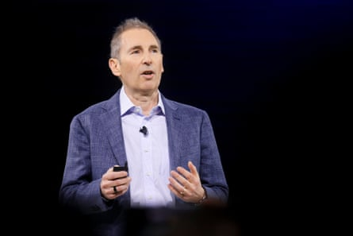

Disabled corporate workers at Amazon have accused the company of engaging in “systemic discrimination”, aggressively quashing their attempts to organize, and using artificial intelligence systems that they allege do not comply with US disability laws.
At the center of the Amazon workers’ complaints are allegations that the company has denied requests for accommodations for disabled staff in an “automated” or “semi automated” way and have allegedly repeatedly removed messages and a petition from an employee Slack channel.
Amazon disputes allegations that it discriminates against disabled workers.
A 31 May letter sent on behalf of a group of more than 200 disabled workers to top executives, including Amazon chief executive Andy Jassy, claimed the company was fundamentally out of step with federal requirements under the Americans with Disabilities Act (ADA), the 1990 civil rights law that protects people against discrimination based on disabilities.
The letter cited policies related to return-to-office mandates, which the letter said were being pushed on disabled workers who previously were allowed to work from home based on medical recommendations, accommodation procedures and accessibility. Among other issues, it raised concerns that employee decisions around accommodation were being driven by AI processes that – one source claimed – do not necessarily follow ADA rules.
One disabled corporate employee who had feared retribution for coming forward about workplace complaints told the Guardian they had been fired without explanation over the course of being interviewed for this story. The person spoke on the condition of anonymity while they were in the process of seeking new employment.
Andy Jassy, Amazon CEO, in New York on 26 February 2025.Photograph: Michael Nagle/Bloomberg via Getty Images
“After the removal of the messages on Slack and my firing, others are now afraid. I talk with them and they are terrified about Amazon doing this,” the person said.
The employee who was fired was one of the leaders of a campaign to organize disabled workers. An email the person sent to senior Amazon managers on 6 June, which was seen by the Guardian, accused the company of violating federal labor rules that ensure rights to collective bargaining and disability-related rights to share information with others who have a disability.
“My Slack access was removed preventing me from sending updates, coordinating and engaging in [National Labor Relations Act] protected activities,” the person said.
The Guardian was also provided screenshots of Slack messages and a petition that appears to have been removed from an Amazon employee Slack channel on disability and accessibility issues.
Amazon did not dispute claims that the messages had been removed. The company said the messages were a violation of company policy to use Amazon’s electronic systems for solicitation purposes. Amazon did dispute claims that it had retaliated against employees for seeking to organize on labor issues.
A spokesperson said: “Amazon respects employees’ rights to organize and doesn’t interfere with these rights. We don’t discriminate or retaliate against employees for engaging in organizing activities.”
In the 33-page letter to Jassy and other senior Amazon executives, the disabled workers said: “The systemic discrimination, retaliation, and policy failures documented here not only violate the ADA but also erode trust, harm individual health, and compromise the company’s integrity. We demand immediate action to reform these policies, foster a truly inclusive workplace, and uphold the rights of all employees.”
The letter cited internal polls conducted by the group of Amazon employees, with 93% of respondents with disabilities claiming that current policies have harmed them. Another 71% of respondents claimed that more than half of their job accommodation requests had been denied or were unmet, and 92% reported a lack of an accessible job accommodation process.
“Employees requesting accommodations often encounter a lack of meaningful dialogue – requests are ignored, denied without explanation, or dismissed via automated systems,” the letter stated.
The workers made a public petition to Amazon executives to address their concerns shortly after the email, earlier this month.
In response to a request for comment, Amazon said an external survey of what it called a small number of unverified employees was not reflective of the opinions of everyone with a disability and that it was inaccurate to suggest otherwise. The company also said its disability and leave services team ensured that employees had access to accommodations and adjustments and that the decisions were driven by empathy. The process was not automated or semi-automated, Amazon said, and it denied that AI had been used for case processing or decision-making in the accommodation process.
The disabled Amazon workers are overwhelmingly corporate, not warehouse, workers. People who spoke to the Guardian on the condition of anonymity were particularly angry about their claims that efforts to organize on Slack – which they said was a modern-day version of the office water cooler – were being denied and suppressed, including by the company allegedly removing posts that sought out workers’ opinions.
“The company is cracking down, and they’re very concerned, and many people are being told not to post here,” claimed one Amazon employee.
Another employee who no longer works at Amazon claimed management had dismissed disabled workers’ complaints as being “disruptive and unproductive”, and had undermined the first-ever corporate union collective bargaining group.
The National Labor Relations Board, the federal agency that is meant to protect federal worker rights, has recently weighed in on employers suppressing workers’ organizing efforts on workplace Slack accounts: in October 2024, the NLRB issued a complaint against Apple, alleging the company was interfering with workers’ rights to collectively advocate for improved working conditions on Slack.
In a statement at the time, Apple said it disagreed with the claims. The case was indefinitely postponed by the NLRB in March 2025; the reasons for that move are unclear.
In 2023, Amazon touted a ranking of “best place to work for disability inclusion” from a non-profit it funds . But the company has also faced a handful of legal challenges related to its treatment of disabled workers.
A 2023 report by United for Respect alleged Amazon’s warehouse workers face systemic barriers in obtaining reasonable job accommodations for their disabilities or workplace injuries at the company. A 2024 lawsuit was filed against Amazon for allegedly failing to provide a sign language interpreter to a deaf employee at a warehouse in California. Amazon has denied the claim and the case in still being litigated.
Pamela Hayter, a former Amazon employee, accused Amazon in 2023 of retaliating against her for advocating for remote work in response to Amazon’s return-to-office mandate. Amazon has claimed she had performance issues.